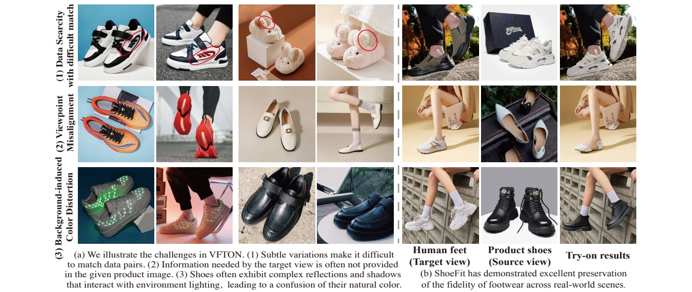
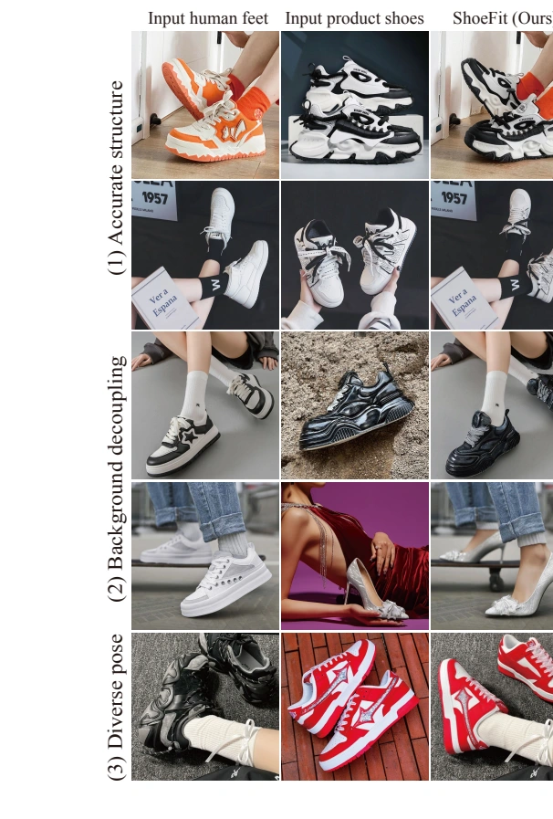
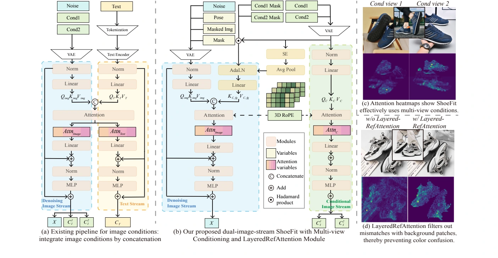
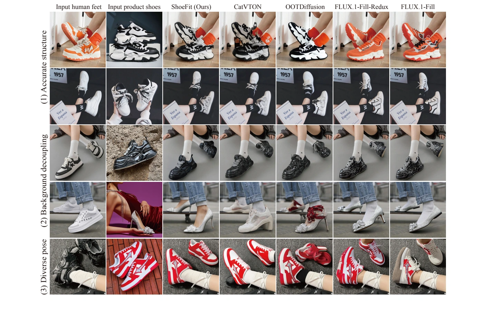

Faithful Footwear Try-On
From product shoes to real-world try-on images: preserve structure, texture, and material appearance across different views and poses.

Abstract
Virtual footwear try-on synthesizes a person wearing a specified pair of shoes while preserving the product’s geometric structure and material appearance. This task presents three challenges: accurately matching product and on-foot images, recovering details when source and target viewpoints differ, and avoiding color distortion caused by the product image’s background.
We introduce MVShoes, a multi-view footwear try-on dataset, and ShoeFit, a dual-image-stream DiT framework that separates condition feature extraction from denoising. Multi-view Conditioning with 3D Rotary Position Embedding combines complementary product views. LayeredRefAttention uses background context to modulate foreground shoe features, then restricts denoising attention to the shoe content. Experiments in the paper show improved fidelity across diverse shoes and real-world scenes.
Try-On Gallery
The input person, a product shoe view, and the corresponding ShoeFit result.

How Does ShoeFit Work?

- Dual-image-stream DiT. The conditioning branch preserves product details, while the denoising branch synthesizes the try-on image using the masked person image, inpainting mask, and foot pose.
- Multi-view Conditioning. Complementary shoe views supply information missing from a single image. 3D RoPE distinguishes view indices while retaining spatial positions within each view.
- LayeredRefAttention. Background context modulates foreground shoe features. The denoising stream attends to the foreground shoe content to reduce background color contamination.
Comparisons
Qualitative comparisons from the original paper, covering challenging structures, backgrounds, and poses.

| Method | SSIM ↑ | LPIPS ↓ | FID ↓ | KID ↓ | DISTS ↓ |
|---|---|---|---|---|---|
| CatVTON-Flux-Lite-2V | 0.756 | 0.171 | 22.64 | 3.318 | 0.1040 |
| ShoeFit-2V | 0.780 | 0.149 | 20.18 | 0.485 | 0.0941 |
These results use the original 7,305-triplet version and 6,305/1,000 split. They are not benchmark scores for MVShoes-clean.
MVShoes-clean
The current release has undergone additional data cleaning and compliance review. It contains 6,151 triplets, with two product shoe views and one corresponding on-foot image per sample. Selected images have undergone face replacement processing.
Access is provided by application for non-commercial academic research only. After review, approved applicants receive the download link and archive password by email.
Limitations
ShoeFit can still struggle with small logos and intricate text. Inaccurate inpainting masks, particularly for tall footwear or heavily occluded shoes, can produce fitting errors. Explicit 3D geometry and material priors are promising directions for future work.
BibTeX
@inproceedings{li2025shoefit,
title={ShoeFit: A New Dataset and Dual-image-stream DiT Framework for Virtual Footwear Try-On},
author={Li, Yuhan and Jin, Zhiyu and Tong, Yifan and Shang, Wenxiang and Cui, Benlei and Chen, Xuanhong and Zhu, Hangcheng and Ni, Bingbing},
booktitle={Advances in Neural Information Processing Systems},
year={2025}
}